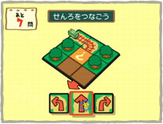

N.O.M：
2005年にニンテンドーＤＳで『やわらかあたま塾』が発売されて、今年2007年にＷｉｉ用ソフトとして『Ｗｉｉでやわらかあたま塾』が発売されます。この間にＤＳ版の海外での発売もありましたが。
海外には北米向けに英語版を、それにヨーロッパ向けに６言語版を出しました。国内でミリオンを達成できたときは嬉しかったですね。海外版を出すに当たって、「言語」というジャンルの問題だけは日本語のままでは通じないので、そこを「論理」というジャンルに置き換えて問題を追加しています。それ以外は基本的に内容を変えていません。
国や言語が違っても評価してもらえるというのは、やはりこのソフトが普遍的なものを扱っているからだと思うんです。Ｗｉｉ版では更にみんなで楽しめる商品を目指しました。
N.O.M：
そのＷｉｉ版ですが、今回のテーマは何でしょうか？
実はＤＳ版が発売された後、「Ｗｉｉでも発売してみては？」という声があったとき、僕達には「Ｗｉｉで出すことの答え」がまだなくて、すぐには取り掛かれませんでした。
で、全然話は変わるんですけど（笑）、私がその頃、子供の幼稚園の運動会でお父さん達が参加するリレーに出場したんです。あれって最終的な順位に到達するまでには悲喜こもごもがあるんですよね。抜かれて順位を下げる人もいれば、抜き返してくれる人もいる。
他のチームと競争しているんだけど、同じチーム内でも協力したり足を引っ張ってしまったり。前の走者が頑張れば、「子供の前だしオレも！」という気持ちになる。その状況がすごく面白くて、何か頭から離れなかったんですよね。
N.O.M：
予測不能な展開が醍醐味なわけですね。
そうです。それで、Ｗｉｉ版のコンセプトに悩んでいたある日、午後からお休みをもらって、大文字山に登って京都の街並みを眺めにいったんです。そこで、ひらめいたんです。「リレーのバトンがＷｉｉリモコンやっ！」って。受け渡すことで生まれる楽しさ、周囲に対する自己責任を持つ緊張感とでもいうか。同じ画面と時間を共有することで、そこには色々な状況やプロセスが生まれるだろうと。
大文字山とは聞いてませんでした（笑）。でも、その考えを聞いて、それはイケるなと感じました。
というのも、『やわらかあたま塾』を体験会などで出展するとき、順番待ちをしている人にもゲーム画面が見えるように、ニンテンドーＤＳのプレイ中の画面を大きなモニターで流しているんですが、そのモニターを見ている順番待ちの人もいっしょに考えてドキドキしている。そんな光景が頭の中にあったんです。
“みんなで共有”というＷｉｉの基本理念をがっちりつかむことで、より楽しいものが作れるんじゃないかと。ニンテンドーＤＳの『やわらかあたま塾』で、「なんだか分からないけれども、ためになることをみんなで楽しく」ということは実現できたんですが、それでも、ＤＳの場合の対戦って個々の画面を見てプレイしているために、少なからず“閉じている部分”もあるんですよね。
N.O.M：
たしかに。おたがいの顔を見て対戦していないかも。
十分おもしろいんですけどね。それがＷｉｉなら1つのテレビを囲んで、みんなで楽しめます。アドバイスしたり、ときにはたしなめたり（笑）。競争するなら勝ちをめざすけど、場合によっては協力もする。たとえミスをしてもその場に参加している面白味となるわけです。
N.O.M：
Ｗｉｉリモコンの操作がシンプルで新鮮に感じます。
画面をポイントするだけのオーソドックスな操作方法は比較的早い段階で決まりました。Ｗｉｉを楽しんでいるお客さんの中には、シンプルに操作したいというニーズも少なからずあると思うんです。初めて多人数プレイに参加する人でも、すぐに溶け込めるでしょう？
画面の操作も同様です。Ｗｉｉという新しいハードウェアだから従来の決まりごとにはこだわらずに進めてみました。私自身、今回のソフトで初めてユーザーインターフェースのデザインに関わりましたし。最初はパソコンのマウス操作などを参考になるかと思って、いろんなWebサイトのデザインを見て回ったのですが、実際にゲームに出してみるとパソコンとＷｉｉでは色々と違いが見えてくるわけです。
N.O.M：
同じポイントするにしてもＷｉｉリモコンとマウスとでは少し異なると？
はい。幅広い年代の方が操作することを予想して、ボタンのサイズなどは余裕を持ってポイントできる大きさにしています。
それと、Webサイトは階層式に画面が切り替わるのが特徴ですが、階層が多いということは慣れていない人にとっては、現在位置がわかりにくくなる危険もあると思うんです。そのため階層は極力少なくして、いつでも最初のメニューに戻れるように心がけました。
メニューを選択していくときに画面を切り替えずにスクロールさせていく仕様は、ひろのの発明といってもいいと思います。私たちは“
巻き物
”と呼んでいるんですが。
実際にプレイすると、どこに何があるのかすごくイメージしやすいんです。
N.O.M：
画面のデザインといえば、いろいろなところで出てくる手描きの文字もカワイイです。
あの文字は、ＤＳ版のアートワークを担当していた末武の手書き文字が元になっています。私たちは彼の名前をとってスエタケフォントと呼んでいます。足りないものは手書きで付け加えたりしながら、使わせてもらいました。
Ｗｉｉ版では曲線を主体にして、良い意味でゆる〜い感じをめざしました。
画面のテイストがじつに爽やかだよね。それでいて独特の味がある。
一番イメージしたのは絵本の持つ上品さですね。“カワイイんだけど、甘くなりすぎない”とでもいいますか。
N.O.M：
最新作では問題が一新されたと聞いています。
はい。すべて新作です。ＤＳ版のジャンルにあった「言語」から「直感」という新しいジャンルを加えています。より幅広い年齢層にスムーズに遊んでもらいたいという狙いもあって。
問題は開発チーム全体でワイワイ言いながら作っています。サンプルの問題は、収録した問題数の３倍は作ったかな。でも、採用されるかどうかは、この手のパズルが非常に得意なきうち次第で。関所ですね。
いえいえ。周囲からのプレッシャーがすごくて（笑）。
興味深いのが、企画段階で紙に書いて考えるだけでは面白く感じない問題でも、プログラムを組むと妙に魅力を増すものがあったりするんですよね。「でまえ記憶」や「レールつなぎ」などはその典型でしたね。
N.O.M：
問題の数はどのくらい用意されているのですか？
問題は自動生成されています。各種条件に応じて、あとはプログラムの方で自動的に作られる。だから同じ条件でも問題パターンは膨大な数が生まれるんです。
これが面白いもので、「型ぬきブロック」という個人的に好きな問題があるのですが、とても人間では思いつかないような、ものすごくデキのいい出題をするときがある。あれには驚かされます。
こんなのぜったい解けない、みたいなパターンが出てきますよね。明らかに人間の発想じゃない（笑）。
N.O.M：
1度聴くと妙に耳に残るテーマ曲ですよね。
ありがとうございます。自分はＷｉｉ版からの参加で、ＤＳ版はユーザーの立場で楽しんでいました。そんなこともあって、前作のイメージがしっかり出来上がっている中で、その音楽をどう変えていくか最初は悩みました。ただ、グラフィックが仕上がってきて塾っぽいイメージが見えてきてからは、あるアイデアが浮かんできまして……。
N.O.M：
んっ、それは何ですか……？
個人的にリコーダー（縦笛）が好きということもありまして、塾っぽい、学校っぽいイメージなら合うだろうと今回のサウンドにも取り入れてみました。参考になるかと思って今日はこのように持参したのですが。
あれ、持ってきただけ？ 吹いてくれないの？
いいんですか（おもむろにウォーミングアップ開始）？ それではソフトとは少し趣きの異なる演奏の仕方で……。
おおっ（と拍手）。
N.O.M：
尺八のような和風の音色にも聞こえてきます。
ありがとうございます。じつは最初、この奏法でリコーダーパートを収録したら、みずたの方から「その吹き方、やめてくれ」と言われまして。
これがあたま塾で鳴るとなると、ちょっと雰囲気が違うと思ったんですよね。
最初は実験的にリコーダーパートを入れてみたのですが、調整していくうちにソフトのイメージに合う音色がだんだん見えてきて。
ゲーム全体としては、曲のイメージが子供っぽいものにならないよう気をつけて、リコーダーを使っています。あくまでも子供から大人までが楽しむソフトですから。ただ、たくさんの曲でリコーダーが使われていますので、見つけてみてください。
帰宅途中なんかで、妙に思い出す音楽になっているんですよ。気がついたら口ずさんでいる。
リコーダーって“温かくて明るい”雰囲気を醸し出してくれるんです。あと、実は今回、サウンド部分にちょっとした仕掛けが隠されているんですよ。
あるモードでがんばっていい成績を出すとどこかで何かが起こるかも。
N.O.M：
Ｗｉｉリモコンのスピーカーも積極的に使われていますね。プレイしているとＷｉｉリモコンがいろんなことを話しかけてくれて。
最初は塾だから“リモコン講師”と呼んでいたんです。そのうち自然とアシスタントのような位置づけになっていきました。あつかうセリフには注意を払いました。本当は少し毒のあるセリフがあっても面白いと思ったのですが、最終的に、あまりネガティブに感じられることがないように気をつけて全体をまとめています。
Ｗｉｉリモコンのボイスは出題する手段としても使われているんですよ。
N.O.M：
「でまえ記憶」ですね。最初に挑戦したときは驚きました。
あれは実際に、お子さんの声を収録してあります。最初はながまつの声を加工して使ってみたのですが、何かがちょっと違う。そこでお子さんのいるスタッフを探して。実は、あそこに・・・。
あっ、ウチですか（笑）。単なる演出レベルに終わっては申し訳ないので、みずたから依頼を受けたあとは家族で特訓しました。
今回、Ｗｉｉリモコンのスピーカからは講師ボイス以外の効果音をほとんど鳴らしていません。本当は色々と鳴らしたかったのですが、講師ボイスを中心にするために止めました。
更にテレビからは、ゲーム開始時や交代時にお知らせボイスで名前を呼んでくれます。
そういえば、そのお知らせボイス、段位などを名前にくっつけて呼んでくれますよ。がんばって高い段位をめざしてみてください。
N.O.M：
せっかくですから皆さんと対戦しながらお話を聞いても良いでしょうか。
（無謀にも開発スタッフに挑戦を挑むN.O.Mチーム。大接戦の末…）
N.O.M：
結局1勝2敗でN.O.Mチームの負けか……悔しい。どれも接戦だったけど。
実際にいつもプレイしているデータを使えば、もっと接戦を楽しむことができます。「たいせんレース」と「きょうりょくサバイバル」というモードでは、出題のレベルを選択するときに「おまかせ」という選択肢があるんです。これを選ぶとプレイヤーごとのプレイデータが入っている塾生ブックを参照して、出題内容を自動的に調整してくれます。
N.O.M：
なるほど……具体的に言いますと？
「きょうりょくサバイバル」では塾生ブックのプレイデータを参照して、その人のやわらかさに合った問題が出題されます。例えば得意なジャンルでは少し難し目な問題、反対に苦手なジャンルはカンタンな問題になるという感じです。つまり、適度な緊張感で遊べる。
そして「たいせんレース」ではチームのレベルに合わせて問題のレベルも調整されます。だから、さきほどのような接戦になることが多いわけです。
N.O.M：
やわらか度の異なるお父さんとお子さんでもいっしょに楽しめますね。
はい。途中でチーム編成を変えても大丈夫です。幅広い年齢層が気兼ねなくいっしょに楽しんで欲しいし、プレイ中に仲間外れを作らないというのが大切なコンセプトなのです。塾生ブックにプレイデータを多く記録している人ほど、より反映されていきます。この塾生ブックはWiiConnect24でＷｉｉフレンドに送信することもできるんですよ。
N.O.M：
よかったら、みなさんの好きな問題を聞かせてください。
知覚の「絵合わせスタンプ」と「まちがいアニメ」ですね。複数のデザイナーが絵を描いているので、色々なバリエーションがあって楽しいですよ。
さきほども言いましたが、やはり「型ぬきブロック」でしょうか。
「形当てキューブ」など分析ジャンルの問題が好みです。サウンド的には、「さかさ記憶」も好きなゲームですが。
私も「型ぬきブロック」が好きなのですが、数字の「玉入れカウント」もオススメです。シンプルなんだけど解き方に色々なパターンがある。
数字の「順番ふうせん」や知覚の「レールつなぎ」など、感覚的にＷｉｉリモコンをすばやく操作して解く問題が好きです。
予想どおりとは思いますが、「どきどきパネル」限定で出てくる「でまえ記憶」です（笑）。残業で疲れたときに、あの声でどれほど励まされたことか。
N.O.M：
最後にユーザーの方へひとことずつお願いします。
前作のユーザーという視点で見ても、今回はみんなで遊ぶという点が強調されています。あと、知覚の「まちがいアニメ」で夜間のビルが描かれた問題があるのですが、あそこで聞こえる犬の鳴き声は自分です……無加工です（笑）。
最高８人で楽しめるので、３つの対戦・協力モードをワイワイ遊んでほしいですね。それと塾生ブックにメダルがそろってきたらＷｉｉリモコンでポイントしてみてください。何か演奏できるかも？
みなさんが各ジャンルでどのくらいのやわらか度を記録できるか楽しみです。同じ問題でも色々なアプローチで解くことができるので、その解き方自体を考えてみるのも、頭をやわらかくしてくれると思います。
Ｗｉｉ本体の似顔絵チャンネルでたくさんＭｉｉを作っておくと、そのＭｉｉ達が塾の廊下にどんどん登場します。自分のＭｉｉに挨拶してきたり、勝手におしゃべりを始めるのを眺めるのも楽しいですよ。
ときには、やわらか度を上げることを考えないで楽しむのもオススメです。家族みんなで相談しながら進めてみたり。面白い問題をたくさん用意したので、じっくり考えながら解いて欲しいですね。
一番楽しい遊び方はユーザーであるみなさんのなかに答えがあるはず。我々は“ためになる面白い問題”という場は提供しますが、プレイ中の雰囲気、楽しみの度合いはＷｉｉリモコンを通じてみなさんが作り出すもの。それが『やわらか』らしい楽しみ方だと思います。
N.O.M：
お話を聞いて、やわらか度もアップした気分です。今日はありがとうございました！